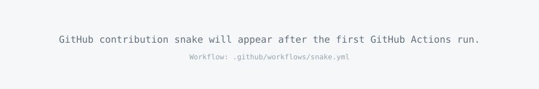

Cloud
AWS · IAM · VPC · EC2 · ALB · RDS · S3 · CloudWatch
I build reliable, secure and automated cloud environments — turning infrastructure into repeatable, observable and scalable systems.
ABOUT
I am Rachel Sigao, a DevOps / Cloud Engineer focused on AWS, infrastructure automation, CI/CD and secure cloud operations.
My goal is to build systems that are not only functional, but also repeatable, secure, observable and easy to maintain. I enjoy learning how each layer fits together — from Linux and networking to cloud architecture, containers, infrastructure as code and deployment automation.
This portfolio is also a living DevOps project: the code is versioned in GitHub, deployed through GitHub Actions and hosted with GitHub Pages.
$ whoami
rachel.sigao
$ focus --current
AWS · DevOps · Cloud · DevSecOps
$ automation --status
ACTIVE ✓
$ infrastructure --mindset
reliable · repeatable · secure
$ deploy
█
TECHNICAL SKILLS
AWS · IAM · VPC · EC2 · ALB · RDS · S3 · CloudWatch
Git · GitHub · GitHub Actions · CI/CD · Jenkins · Docker
Terraform · Linux · Networking · Infrastructure as Code
Docker · Kubernetes · Containerization · Deployment patterns
DevSecOps · IAM · Least privilege · Secrets · Secure pipelines
Bash · Python fundamentals · GitHub Actions · Repeatable workflows
SELECTED PROJECTS
Designed a secure, highly available application architecture using a VPC, public/private subnets, Application Load Balancer, EC2 and RDS across multiple Availability Zones.
Built a pipeline that takes source code from GitHub through automated validation, containerization and deployment, demonstrating repeatable software delivery.
Provisioned cloud infrastructure declaratively and organized reusable resources to make environments consistent, reviewable and reproducible.
Project descriptions and GitHub links are ready to replace with your real repositories as you build them.
EXPERIENCE & LEARNING
Hands-on learning across AWS architecture, Linux, networking, Docker, Terraform, CI/CD and DevSecOps.
Developing practical understanding of version control, infrastructure, deployment workflows, security and reliability.
Expanding into container orchestration, observability, advanced CI/CD and production-grade cloud patterns.
GITHUB

Updated automatically by GitHub Actions.